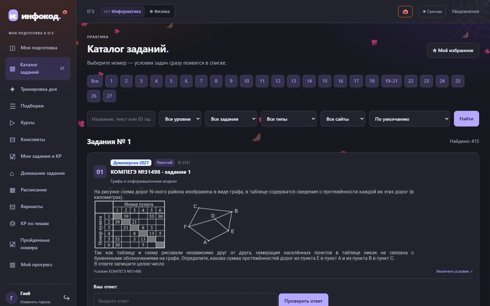

EdTech · Semantic search
Infocode
A platform for preparing for Russia’s Unified State Exam in computer science and physics. Students solve problems and take courses. Teachers assign tests and track progress.
The recommendation system finds related problems by ranking their statements using cosine similarity between embeddings. The multilingual-e5-small model runs locally with ONNX Runtime, and embeddings update in the background.
